2026 AMET 자율주행 해커톤 — Physicar
이 프로젝트가 채우는 로드맵 칸:
pipelineevidence→ Research Direction
Source
작업 폴더
C:\2026AMET자율운행자동차대회· 코드physicar_ws(= GitHubyusik36/ANSL_AMET2026, private) Claude 세션 29개 (2026-08-13 ~ 08-31) · 사진 39 · 영상 26 원본 문서:physicar_ws/README.md,physicar_ws/YS_HANDOVER.md2026-09-01 보강: 대회장 노트북 작업본노트북 작업본/(planner 스냅샷 3벌, rosbag 2개, 진단 스크린샷 2장) 영상은 전부 배속 GIF로 바꿔 넣었다 (360 px · 10 fps). 원본.mp4는_attachments/에 그대로 있고, vault.gitignore가*.mp4를 제외하므로 저장소에는 GIF만 올라간다.
13일 만에 플랫폼 구성부터 대회 출전까지 끝낸 프로젝트. 준비 기간의 절반은 하드웨어와 싸웠고, 나머지 절반에 주행 로직의 설계 전환이 한 번 있었다. 그 전환이 이 프로젝트에서 제일 말할 거리가 많은 지점이다.
결과: 예선 통과 → 본선 완주(패널티 있음) → 미수상. 단, 대회 출전에는 팀원이 개발한 E2E 로직을 적용했다. 이 노트가 다루는 통로 기반 스택은 준비 과정의 기록이다 (§5).
1. 대회 개요
기본 정보
| 대회 | 2026 자율주행 해커톤 경진대회 (AMET 2026) |
| 주최 | KAAMI (한국자동차공학한림원), AME 2026 산업전 동시 개최 |
| 일시·장소 | 2026-08-25(화) ~ 27(목), 코엑스(COEX) |
| 참가 | 대학생 팀 4~6명 |
| 차량 | 주최측 대여 Physicar 1대 (자체 제작 차량 참가 불가 — 실격) |
| 시상 | 총 500만원 (대상 300 / 최우수 100 / 우수 50×2) |
일정
8/18(화) 사전 시뮬레이션 프로그램 배포 + 코스 규격·예선 장애물 위치 공개
8/25(화) 12:00 차량 배포 ─┐
8/26(수) 무박 2일 사전교육·자유개발 │ 실차 개발 가능 시간 ≈ 29시간
17:00 차량 반납 ─┘
8/27(목) 09~10 준비 / 10~12 예선 / 13~15 본선 / 15~ 시상식
실차 스펙 (Physicar)
Raspberry Pi 5 (8GB) · Ubuntu 24.04 LTS · ROS2 Jazzy RPLidar C1 · 9축 IMU(ICM-20948) · 100° 야간카메라(OV5647, CSI) 휠베이스 0.18 m · 트랙폭 0.16 m · 휠반지름 0.0375 m
규정에서 설계를 강제한 조항
이 네 가지가 아키텍처를 사실상 결정했다.
- SW/HW 임의 변경 시 즉시 실격. 대신
/opt/physicar/userdata/myapp.sh슬롯이 열려 있다 → 팀 코드는 공식 스택 위에 얹는 별도 워크스페이스여야 한다. 센서 드라이버를 우리가 띄우면 충돌한다. - Stateless 주행 요건. 이탈·충돌 시 운영진이 차를 트랙 중앙에 재배치하므로, 트랙 어느 지점에서 시작해도 동작해야 한다 → 주행 중 트랙 상의 자기 위치를 기억하는 설계를 쓸 수 없다.
- 차량 접속은 대회 제공 노트북으로만 (본인 노트북 사용 시 실격).
- 도전 기회 1회, 1바퀴 제한 3분. 순위는 랩타임(짧은 순).
채점
| 항목 | 패널티 |
|---|---|
| 장애물(라바콘) 충돌 | +5초 |
| 트랙 이탈 (4바퀴 모두 이탈 시) | +5초 |
| 신호등 적색 출발 | +10초 |
트랙 12 m × 7 m, 라바콘 6개. 예선 트랙은 8/18 공개분으로 고정, 본선에서는 장애물 위치만 바뀐다. ← 이 한 줄이 “전역 최적 경로를 미리 계산해 둔다”는 접근을 살려둘 근거가 됐다가, 나중에 위치추정 문제로 폐기된다 (3장).
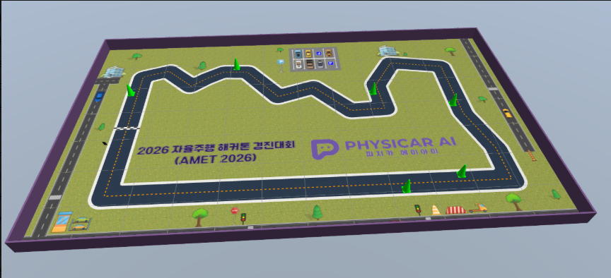
8/18 공개된 대회 트랙 (시뮬레이터 전경). 실측 길이 30.505 m, 폭 0.700 m
신호등
일반 도로 신호등이 아니라 출발선 오른쪽 전방 바닥에 놓이는 박스형 모듈이다. 카메라 화면을 시계로 치면 4시 방향. 적색(위) / 녹색(아래) 2구뿐이고 황색은 없다. (초기에 3구로 잘못 알고 신호등 영상까지 만들었다가 8/18에 정정)
2. 개발 구조
2-1. 한눈에
카메라 이미지에서 “차가 지나갈 수 있는 통로”를 직접 찾고, 그 통로 한가운데를 향해 몬다. 차선을 따라가는 것도, 장애물을 피하는 것도 아니다 — 장애물은 그냥 통로가 좁아진 지점이라 회피 모드로 들어가고 나오는 코드 자체가 없다.
flowchart TD CAM["/camera/image_raw<br/>OV5647, 480x360"] subgraph PLANNER["physicar_planner — corridor.py (ROS 비의존 순수 함수)"] direction TB MASK["blocked_mask (HSV)<br/>'도로가 아닌 것'이 아니라<br/>'도로인 것'을 정의"] SCAN["scan_corridor<br/>거리별 좌우 실측 폭 → corridor"] BAND["reachable_band (앞→뒤) ∩<br/>survivable_band (뒤→앞)"] TGT["pick_target"] PP["pure_pursuit<br/>steer = atan2(2·L·sinα, Ld)"] SPD["speed_for<br/>corridor_curvature 기반"] MASK --> SCAN --> BAND --> TGT TGT --> PP TGT --> SPD end subgraph WIRE["planner_node.py — 배선 레이어"] RAMP["ramp + 20Hz 고정 발행<br/>+ 0.4s staleness 체크"] end subgraph VISION["physicar_vision"] TL["traffic_light_node<br/>RED/GREEN blob, 2프레임 디바운스"] end subgraph JUDGE["judgment_node — 최종 중재, 20Hz"] F1["1. plan 신선한가?<br/>stale → 무조건 정지"] F2["2. RED? → speed만 0<br/>(조향은 안 건드림)"] F3["3. plan/valid 순간 소실<br/>→ 0.5s 이전 조향 유지 후 정지"] F1 --> F2 --> F3 end OUT["/speed (m/s), /steering (rad)<br/>클램프: 0~3.0 m/s, ±20°"] DRV["physicar_driver_node (실차 공식, 이미 서비스로 실행 중)<br/>ESC + 조향서보"] CAM --> MASK CAM --> TL PP --> RAMP SPD --> RAMP RAMP -->|plan/steering, plan/speed, plan/valid| F1 TL -->|traffic/light_state, traffic/valid| F2 F3 --> OUT --> DRV
2-2. 핵심 설계 판단 — 왜 통로(corridor)인가
처음 만든 구조는 교과서적인 분리 구조였다.
flowchart LR LIDAR["/scan"] --> AVOID["avoid_node<br/>±30° 콘 최소거리 리액티브"] CAM2["/image_raw"] --> LANE["lane_follow_node<br/>HSV+contour"] CAM2 --> TL2["traffic_light_node"] AVOID -->|obstacle/*| J2["judgment_node<br/>(구버전: 회피/차선 핸드오버 중재)"] LANE -->|lane/*| J2 TL2 -->|traffic/*| J2 J2 --> DRV2["physicar_driver_node<br/>(연습 섀시, Arduino ESC+서보)"]
이걸 버렸다. 이유:
제어권이 코너 한복판에서 넘어간다. 회피 노드가 차를 어디에 놔두고 나갈지 모르는데, 차선 노드는 거기서부터 다시 차선을 찾아야 한다. 넘겨주는 순간과 돌려받는 순간이 각각 버그 자리이고, 둘 다 가장 위험한 타이밍이다.
통로 기반에서는 인계 지점이 없으니 인계 버그도 없다.
개념 — 이건 무슨 방법인가
정식 명칭을 붙이면 occupancy 기반 local planning에 가깝다. F1TENTH 계열에서 쓰는 Follow-the-Gap의 이미지 평면 버전이라고 봐도 된다. 라이다 스캔에서 빈 구간(gap)을 찾아 그 중앙으로 모는 대신, 카메라 이진 마스크의 행마다 빈 구간을 찾는다. 차선(lane)이라는 중간 개념을 거치지 않는 게 핵심.
상세 설계는 Corridor Planner (physicar_planner).
2-3. 이미지 한 장이 바퀴까지 가는 길
각 단계에 8/20 랩미팅용으로 캡처한 디버그 화면을 붙였다.
① 원본 프레임
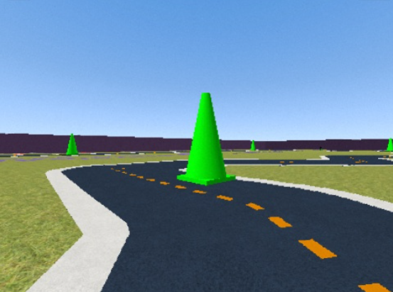
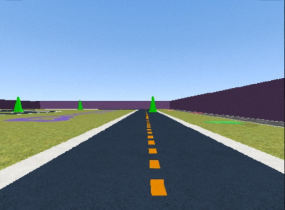
② 주행가능 마스크 — blocked_mask()
HSV로 **“도로가 무엇인가”**를 정의하고, 나머지를 전부 blocked로 둔다.
여기서 규칙의 방향을 한 번 뒤집었다
첫 버전은 “초록색인 것을 막는다”(잔디를 blocked로)였다. 그러자 초록이 아닌 건 전부 도로가 됐다 — 경계벽이 H 141로 읽혀서 주행가능으로 분류됐고, 차가 벽을 트랙으로 알고 3 m/s로 들이받았다. 도로 쪽을 명명하도록 바꾸면, 모르는 표면은 자동으로 장애물이 된다. 틀릴 때 안전한 방향으로 틀리는 쪽이 규칙의 옳은 방향이다.
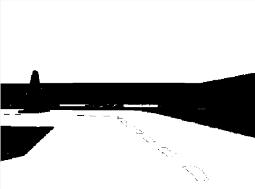
흰색 = 주행가능, 검정 = blocked. 라바콘도 벽도 잔디도 전부 검정 하나로 뭉개진다
③ 행별 자유구간 — scan_corridor()
이미지의 여러 행(row)을 훑으면서 각 행에서 연속된 흰색 구간을 찾는다.
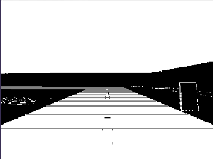
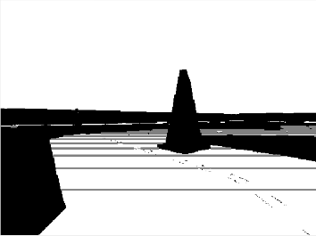
개념 — IPM (Inverse Perspective Mapping)
이미지의 행 번호 → 차 앞 거리, 열 번호 → 횡방향 위치(m) 로 바꾸는 변환.
distance_to_row()/column_to_lateral()이 그 역할이다. 카메라 내부 파라미터와 장착 높이·각도(URDF 체인에서 가져옴)를 알면, 지면이 평평하다는 가정 하에 픽셀을 미터로 환산할 수 있다. 이게 되니까 “통로 폭 0.7 m” 같은 물리량으로 판단할 수 있다.
여기에 최대 통로폭 제한(MAX_PLAUSIBLE_SPAN) 이 붙는다.
0.7 m 트랙에서 1.9~2.1 m짜리 구간이 나오면 그건 넓은 통로가 아니라 마스크에 구멍이
나서 스캔이 화면 끝까지 달아난 것이다. 걸러내지 않으면 직선에서 곡선을 봤다고
보고할 만큼 곡률 피팅을 끌어당긴다.
④ 도로 외곽선 / 중심 사슬
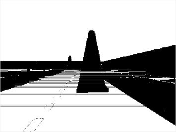
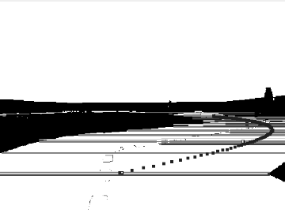
행별 자유구간의 중심을 이어 붙인 사슬(chain). 라바콘을 지나며 자연스럽게 휘어 있다
⑤ 도달 가능 대역 — reachable_band() ∩ survivable_band()
통로가 보인다고 다 갈 수 있는 건 아니다. 차의 최소회전반경으로 갈 수 있는 곳만
남긴다. MAX_LATERAL_SLOPE(전진 1 m당 바꿀 수 있는 횡방향 위치)가 그 필터다.
앞→뒤 방향(도달 가능)과 뒤→앞 방향(빠져나갈 수 있음)을 각각 훑어 교집합을 쓴다.
⑥ 목표점 + 조향 — pick_target() → pure_pursuit()
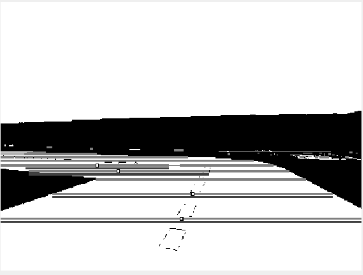
개념 — Pure Pursuit
차 앞 일정 거리(lookahead)에 목표점을 찍고, 현재 위치에서 그 점을 지나는 원호를 그린 뒤 그 원호의 곡률에 맞는 조향각을 낸다.
δ = atan2(2·L·sin α, L_d)— L은 휠베이스, α는 목표점 방향각, L_d는 lookahead. lookahead는 속도의 함수(lookahead_for())로 둔다. 느릴 때 짧게, 빠를 때 길게. 이걸 고정하면 저속에서 흔들리거나 고속에서 코너를 못 돈다.
⑦ 속도 — corridor_curvature() → speed_for() → ramp()
통로의 곡률에서 회전반경 R을 얻고, 횡가속도 한계에서 속도를 정한다.
v = sqrt(a_lat · R) # a_lat = aggression 파라미터 (기본 4.0 m/s²)
발진 버그 — 이 프로젝트에서 제일 비싼 버그
플래너는 원래 통로가 허용하는 속도를 허용되는 즉시 퍼블리시했다. 출발선에서는 그게 200 ms 안에 0 → 3 m/s를 요구하면서 동시에 조향 10°를 걸라는 뜻이었고, 차는 1.1 m 만에 옆으로 트랙을 벗어났다. 트랙을 잘못 읽은 게 아니다. 통로를 정확히 읽고, 어떤 차도 한 스텝에 낼 수 없는 양을 요구했다. → 명령 자체를 램프로 바꿨다 (
max_accel2.0 /max_decel5.0 m/s²). 감속을 가속보다 세게 허용한 건 의도다 — 너무 빨리 서면 시간을 잃지만, 너무 늦게 서면 그 주행을 잃는다.
2-4. judgment_node — 최종 중재
플래너가 낸 값을 그대로 바퀴에 보내지 않는다. 이 노드가 마지막 관문이다.
- 신선도:
plan/*이 0.4 s 이상 낡으면 무조건 정지 - 신호등 게이트: 적색이면 speed만 0 — 조향은 건드리지 않는다
- 순간 소실 대응:
plan/valid가 순간 꺼지면 0.5 s 동안 이전 조향을 유지한 뒤 정지 (평균내서 뭉개지 않는다) - Stateless 유지: 기억하는 건 마지막 조향값과 타임스탬프뿐이고 둘 다 자동 만료 → 규정 2번 충족
카메라가 죽어도 planner_node는 침묵이 아니라 0으로 수렴하는 스트림을 계속 낸다.
하위 노드가 “변화 없음”과 “센서 다운”을 구분할 수 있어야 하기 때문.
2-5. 인터페이스 계약
| 방향 | 토픽 | 타입 | 비고 |
|---|---|---|---|
| 입력 | /camera/image_raw | Image | ~15 Hz |
| 입력 | /scan | LaserScan | ~10 Hz — 현재 파이프라인 미사용 |
| 입력 | /imu | Imu | 50 Hz, 6축만 — 미사용 |
| 출력 | /speed | Float64 | m/s |
| 출력 | /steering | Float64 | rad, 양수 = 좌회전 |
현재 아키텍처는 카메라 하나로만 주행 판단한다.
개념 — 왜
/cmd_vel이 아닌가Physicar는 애커만(Ackermann) 조향 차량이다. 차동구동 로봇처럼 (선속도 v, 각속도 ω)를 주는 게 아니라 속도와 조향각을 따로 준다. 실차 드라이버가
/cmd_vel도 받긴 하지만 내부에서steering = atan(ω·L/v)로 변환할 뿐이라, 직접 내는 쪽이 명시적이다.
IMU orientation 필드를 쓰지 말 것
센서 칩은 9축(ICM-20948)이지만
/imu토픽은 6축(자이로+가속도)만 준다. 공식physicar_driver_node.cpp가orientation_covariance[0] = -1.0으로 명시 — ROS 표준 관례로 “orientation 없음/신뢰 불가”라는 뜻이다. 연습용 IMU 드라이버는 편의상 쿼터니언을 채워 보내므로 연습 환경에서만 되는 코드를 짜게 되는 함정이 여기 있다. (2026-08-13 담당자 확인, 08-16 공식 소스 재확인)
2-6. 안전 클램프는 우리가 구현하지 않는다
공식 드라이버 SDK에 이미 하드코딩돼 있다 (2026-08-16 소스 확인).
- 최대속도 3.0 m/s, 최대조향 ±20° (기계한계 24°)
- ESC 데드존
min_speed0.3 m/s — 이보다 작은 명령은 사실상 무반응 - 명령 유효시간 1초 — 갱신 없으면 speed 자동 0 → 판단 노드는 1 Hz보다 빠르게 계속 퍼블리시해야 한다 (현재 20 Hz)
2-7. 하드웨어 없이 개발하기
corridor.py에 rclpy가 한 줄도 없다. 의도된 것이고, 그래서 시뮬레이터도 차량도
없이 로직만 단위 검증할 수 있다.
python3 tools/YS_corridor_test.py # 30개 체크, 시뮬레이터/차량 불필요2-8. 계측 도구 (tools/YS_*.py)
팀 공유 환경에서 우리 파일을 구분하려고 전부 YS_ 접두사를 붙였다.
| 도구 | 답하는 질문 |
|---|---|
YS_calibrate.py | 도로가 주변과 어느 채널에서 갈리나, 경계값은 얼마인가 |
YS_trace.py | 명령한 속도와 실제 속도가 같은가 — 판단이 틀렸나 명령이 안 갔나 |
YS_run.sh | 한 바퀴 벤치마크 — 리셋·구동·채점·정리를 한 명령으로 |
YS_bench.py | 랩타임/코스이탈 자동 채점 (시뮬레이터 HTTP API, 읽기 전용) |
YS_perception_probe.py | IPM 거리 추정이 실제와 맞는가 |
YS_steer_check.py | 조향 부호와 라이다 장착각이 실제로 어느 쪽인가 |
YS_track_dump.py | 로드된 트랙 기하를 오프라인으로 저장 |
YS_raceline.py | 최소곡률 레이싱라인 (평가용 — 주행엔 못 씀, 3장) |
YS_corridor_test.py | 플래너 로직 30개 검증 — 시뮬레이터 없이 |
3. 포기한 것 — 전역 최적 레이싱라인
포기한 게 아니라 못 쓴다는 걸 증명하고 접었다. 이 판단 과정이 프로젝트에서 가장 공학적인 부분이라 따로 뺀다.
왜 매력적이었나
본선에서 장애물 위치만 바뀌고 트랙은 고정이다. 그러면 오프라인에서 최소곡률 레이싱라인을 계산해두고 그걸 추종하는 게 당연히 빠르다. DSC 프로젝트에서 이미 써먹은 방식이기도 하다 (DSC Autonomous Driving).
왜 못 쓰나
레이싱라인을 추종하려면 차가 트랙 위 자기 위치를 알아야 한다. 그런데:
- 휠 엔코더가 없다
- 위치는 레이저 스캔 매칭으로만 나온다
- 대회장 펜스는 20 cm인데 라이다 평면은 17 cm
- 연습장에는 펜스가 아예 없다 (대회 측 답변)
→ 스캔 매칭이 붙잡을 기하학적 특징이 없다. 전역 위치추정 불가.
→ YS_raceline.py의 결과는 주행에 직접 못 쓰고 시뮬레이터 평가 기준으로만 쓴다.
“지금 보이는 것만으로 운전한다”는 통로 기반 설계가 여기서 나왔다.
그래도 계산은 해봤다 — 트랙 실측 (2026-08-19)
YS_track_dump.py로 시뮬레이터 /sim/api/world에서 뽑은 값:
길이 30.505 m (388점, 간격 0.0786 m)
경계상자 x 1.38..10.90, y 1.21..5.82
출발점 (1.400, 3.395), 방위 -90.0°
도로 폭 최소 0.700 m ← 트랙의 절반 이상이 정확히 이 값
곡률 분석 결과가 결정적이었다:
| 스무딩 스텐실 | 최소반경 | 필요 조향 | 가능? |
|---|---|---|---|
| 0.18 m | 0.068 m | 69.23° | ✕ |
| 0.50 m | 0.205 m | 41.34° | ✕ |
| 0.75 m | 0.431 m | 22.66° | ✕ |
차 한계는 조향 20° → 최소반경 0.495 m. 어떤 스케일로 매끄럽게 해도 중심선은 못 돈다.
코너 커팅은 최적화가 아니라 완주의 전제조건이다. 그리고 차폭 0.16 m 기준 중심선에서 편측 여유는 0.270 m — 이게 커팅 예산 전부다. (최적화 레이싱라인은 최소반경 0.581 m / 조향 17.2°로 통과)
4. 개발 흐름
8/13 (수) — 플랫폼을 처음부터 만든다
팀에 차가 없었다. 랩실 부품으로 연습용 플랫폼을 조립하는 것부터 시작.
- 대회 OT 자료 + 웹 분석 → 실차 스펙과 규정 정리
- RPi4B에 Ubuntu 24.04 + ROS2 Jazzy (실차 SW 스펙에 맞춤), SSH 접속 구성
- RPLidar A3 사망 — 전원을 줘도 모터가 안 돈다. 케이블 교체해도 동일 → A1으로 교체
- 카메라 ELP-USB500W02M-BL36 (170° 어안), HandsFree USB IMU 연결
- 대회 담당자에게 인터페이스 확답 확보:
/speed+/steering, IMU는 6축 physicar_driver커밋 —/speed+/steering→ Arduino ESC/서보
이날 확립한 원칙
“완전히 같은 차를 만드는 게 아니라, 프레임워크(인지-판단-제어 파이프라인)를 먼저 완성한다.” 부품이 다 대체품이므로 하드웨어를 흉내내는 대신 토픽·노드 이름을 실차와 똑같이 맞춰 두면 로직은 그대로 이관된다.
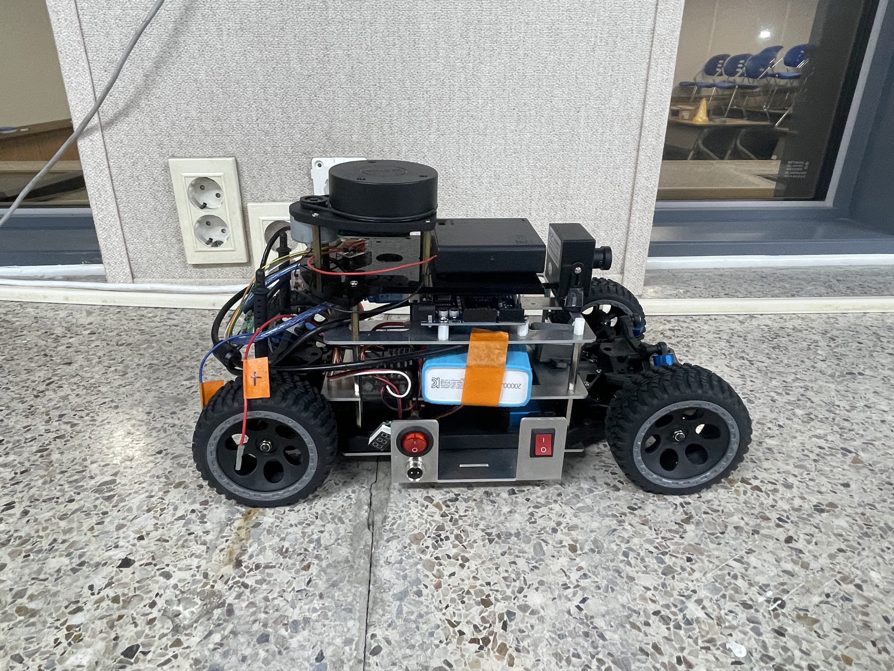
연습 플랫폼 — 1/12 RC 섀시 + RPi4 + RPLidar A1 + USB 카메라 + Arduino. 보조배터리는 테이프로
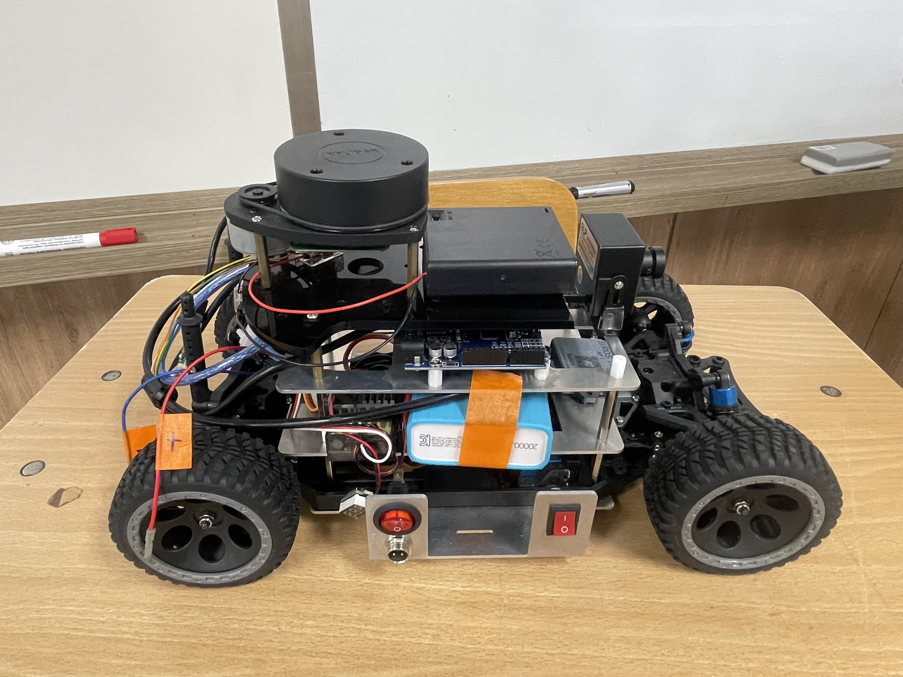
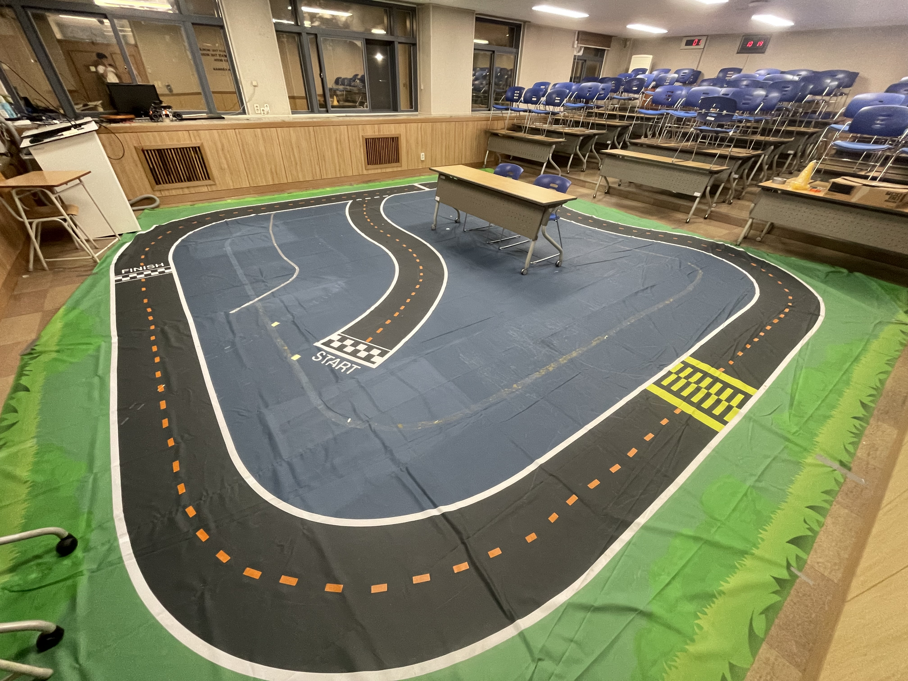
강의실에 깐 연습 트랙*
8/14 (목) — 하루를 전원 문제에 썼다
- 모터 배터리(NiMH 7.2 V) GX12-2 커넥터가 랩실에 없어 충전 불가 → 악어클립으로 직결
- 보조배터리로 RPi4 + 라이다 + 카메라 + IMU를 동시에 못 돌린다. 라이다 모터 기동 전류 스파이크가 다른 USB 장치를 리셋 (dmesg 확인) → 라이다 전원선을 분리해 별도 급전하는 방안 시도, 결국 벽전원으로 개발
- 첫 장애물 회피 테스트 (
avoid_node):- 모터는 도는데 서보가 한쪽으로만 감 → 조향 부호 문제
- 라이다를 뒤로 달았다는 걸 발견 (바퀴가 장애물을 따라감)
- 아주 가까이 와야만 감지 → 캘리브레이션 불일치
여기서 남은 자산
autonomy_launch.py가front_offset_deg:=180.0,avoid_steer_sign:=-1.0을 오버라이드하는 이유가 이거다. 연습 섀시 전용 launch이고, 실차에 쓰면 안 된다.
8/15 (금) — 파이프라인 1차 완성, 규정 재확인
- 신호등 영상 제작 (휴대폰으로 재생해 출발 신호로 씀) — 이때는 3구인 줄 알았다
- 대회 규칙 전체 정리 (1장 내용)
- 인지/판단 3노드 커밋:
physicar_vision(lane_follow + traffic_light + hsv_calibrate),physicar_judgment(최종 중재),physicar_nav(avoid를 조언 입력으로 격하) - 실기 통합 테스트: 더미 센서 데이터로 파이프라인 정상 확인, 실측 캘리브레이션값
(
FRONT_OFFSET_DEG=180,AVOID_STEER_SIGN=-1.0) 코드 반영 - 저장소 public 전환 (8/25에 되돌림)
8/16 (토) — 공식 소스 입수
팀이 Physicar 내부 파일을 확보. 여기서 추측이 사실로 바뀐 것들:
/opt/physicar/userdata/myapp.sh배포 슬롯 확인 → “SW 변경 금지” 규정과 무관하게 팀 로직을 올릴 정식 경로가 있다는 게 확정- 안전 클램프가 드라이버에 하드코딩돼 있음을 소스로 확인 → 우리가 구현할 필요 없음
/camera/image_raw토픽 불일치 버그 발견/수정real_autonomy_launch.py신설 (센서 드라이버를 띄우지 않는 실차/시뮬용 launch)- 60° / 90° / 120° 코너로 인지 재검증
8/18 (월) — 설계 전환일
트랙이 공개되고 공식 웹 시뮬레이터(physicar.ai)에 처음 들어간 날. 하루에 가장 많은 것이 결정됐다.
① end-to-end 학습을 검토하고 접었다. “장애물 없는 트랙을 end-to-end로 빠르게 돌다가, 센서가 장애물을 잡으면 통제권을 넘겨받아 회피하고 다시 복귀” — 매력적이지만 도전 기회가 1회고 학습 데이터를 모을 시간이 없다. → 고전 방식 + 강한 파라미터화로 결정.
② 논문 4편 분석 (F1TENTH/RoboRacer, ForzaETH Race Stack, Optimization-Based Autonomous Racing, Opponent Trajectory Prediction). 전부 전역 위치추정을 전제하고 있어서 그대로는 못 쓴다는 것을 확인 → 3장의 결론으로 이어짐.
③ 통로 기반 플래너로 전환. physicar_planner 신설, 차선추종/회피 분리 구조 폐기.
④ 평가 인프라 구축. YS_bench(랩타임·이탈 자동 채점), YS_perception_probe(IPM
거리 오차 실측), YS_raceline(오프라인 최적 경로), traffic_light_node 재작성
(황색 제거, 램프 모양 blob 검출, 신호등 실제 위치로 ROI 이동)
이날 도입한 작업 방식 — 세션 2개 분업
개발 세션(로직 수정)과 시뮬 세션(실행·관찰 전담)을 나누고
YS_sim_log.md파일로 주고받게 했다. 시뮬 세션은 소스를 절대 수정하지 않고, 원인 추정만 적는다. 관찰자가 코드를 고치기 시작하면 무엇 때문에 좋아졌는지 알 수 없게 되기 때문.
8/19 (화) — 발진 버그와 트랙 실측
- 발진 버그 수정 (2-3 ⑦절) — 램프 도입 + 정지 시 lookahead 과소 문제
judgment_node재작성 — 회피/차선 중재 로직 제거, failsafe + 신호등 게이트만 남김YS_calibrate.py— 차가 서 있는 바닥에서 도로 색 경계값을 뽑아 launch 인자로 출력. H·S·V 세 채널을 다 채점해서 어느 채널이 실제로 가르는지 이름을 대준다YS_trace.py— 명령 속도와 실제 속도를 한 시간축에 → 판단이 틀렸나, 명령이 안 갔나YS_run.sh— 리셋·구동·채점·정리를 한 명령으로- 트랙 실측 dump (3장의 숫자들)
8/20 (수) — 백업과 기록
- 웹 시뮬레이터 터미널 + ChatGPT로 디버깅한 결과를
8.20자_로컬백업/으로 회수 - 랩미팅 발표용으로 디버그 화면 전부 캡처 — 이 노트의 사진은 전부 이날 것
이날 확인된 실패 모드 두 가지 (/debug/road_mask를 rqt로 직접 보면서):
세그멘테이션은 멀쩡했다. 아스팔트=흰색, 잔디·벽·콘=검정, 차선/중앙선도 도로로 정상 포함. 문제는
scan_corridor()가 검출된 도로 형상을 경로로 못 바꾸는 것이었다.
- 실패 모드 A: 화면 중앙(y=0)을 포함하는 구간만 도로로 인정 → 코너가 심하면 도로가 보이는데도 놓친다
- 실패 모드 B: 차량 정면만 우연히 검은 영역에 걸리면 옆에 도로가 있어도 “corridor 없음”으로 오판
결론: HSV/마스크는 안 고쳐도 된다. “화면 중앙과 이어진 도로만 유효”라는 가정을 없애는 것이 우선.
코너 강인성 시험
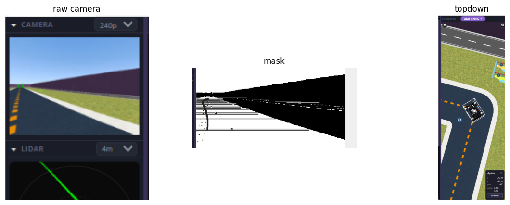
좌: raw camera + lidar / 중: road mask / 우: 시뮬레이터 topdown — 세 화면을 붙여 놓고 본다
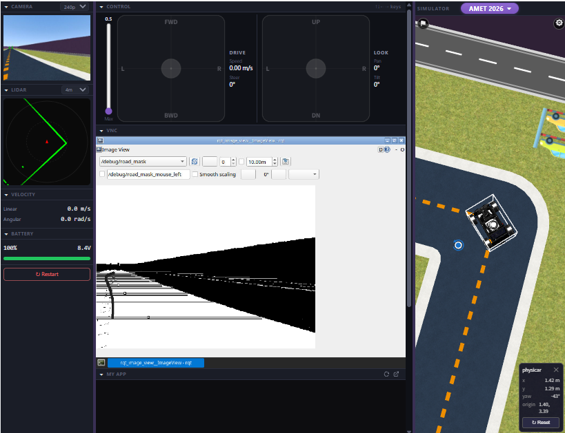
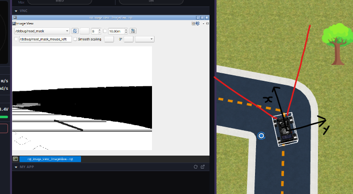
노이즈(라바콘·차선 파선) 무시 시험
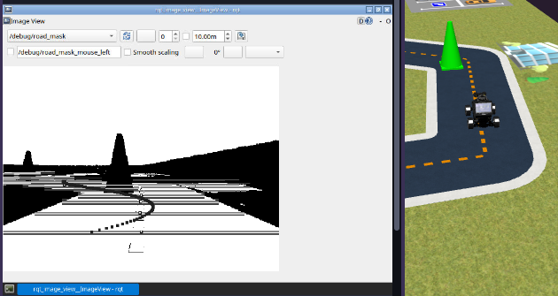
라바콘을 지나며 중심 사슬이 자연스럽게 우회한다. 별도 회피 코드는 없다 — 통로가 좁아졌을 뿐
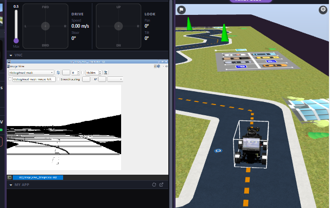
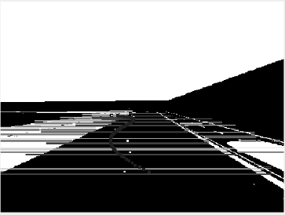
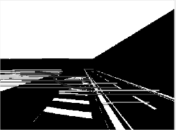
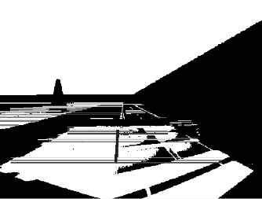
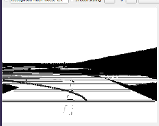
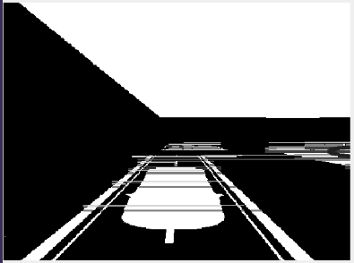
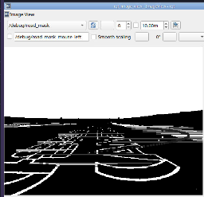
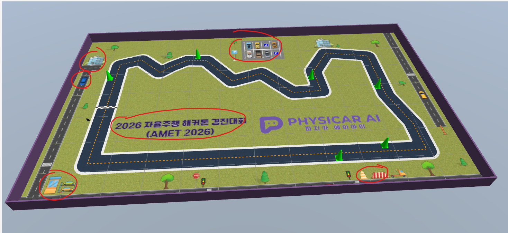
주행 데모
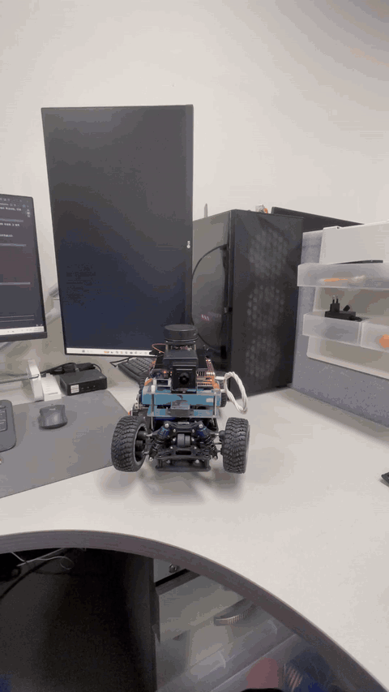
8/21 ~ 8/22 (목~금) — 인프라 이중화
대회장에서 인터넷과 데스크탑을 못 믿는다는 전제로, 모든 것을 두 벌로 만들었다.
- 로컬 시뮬레이터 구축: 공식 시뮬레이터 컨테이너 이미지(8.4 GB, 전개 시 27.2 GB)를
Docker로 로컬 기동. nginx + code-server 통합 UI를
https://127.0.0.1:8443/에 올림 (PowerShell 실행 정책, 자체 인증서 등록 등 삽질 포함) - Tailscale 원격 접속: 노트북 → 데스크탑 (
https://100.79.41.23:8443/) 공유기 포트포워딩은 금지 — 시뮬레이터 스택은 인증이 거의 없다 - RPi5 환경 추가 구성 — 실차와 같은
physicar_ws구조로 연습대 하나 더 ys_joy_teleop— 게임패드로 차를 몰 수 있게 (실차 공식 teleop과 같은 토픽 계약)
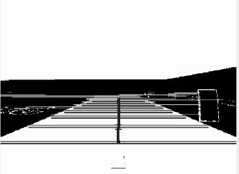
경로 생성 동작 (원본: 2026-08-21-path-planning.mp4)
8/23 ~ 8/24 (토~일) — 인지 파이프라인 재설계
ChatGPT와 한 단계씩 상의하며 인지 계층을 7단계 로드맵으로 다시 세웠다.
camera
① 도로/마킹 인식 ✅
② 실제 경기 트랙 식별 ✅ PATH_OK / TURN_ONLY / REACQUIRE / LOST
③ 신뢰 가능한 도로 중앙 Reference Path ✅ path fitting / shape validation
④ 장애물 구분 ← 대회 출발 시점 진행 중
평면 무늬 vs 솟아 있는 물체 / 지면 접촉 위치 / 좌·우·점유폭·신뢰도
⑤ 장애물 회피 (feasible corridor, local spline)
⑥ 곡선 감속 / 직선 가속
⑦ Tracking Controller
②의 상태기계(PATH_OK / TURN_ONLY / REACQUIRE / LOST)가 8/20에 찾은 실패 모드
A·B에 대한 답이다 — “지금 보이는 길이 아까 믿던 그 길인가”를 명시적으로 판정한다.
이후 진행 — ④⑤는 대회장에서 끝났다
8/25
26 코엑스에서 ④ 장애물 구분(Stage-4/4B/4C)과 ⑤ 회피(Stage-5AE)를 완성하고, ⑦ Tracking Controller의 1차 배선까지 갔다. → 8/25 (화) — 차량 인수, 실차 데이터 수집, 인지 ④
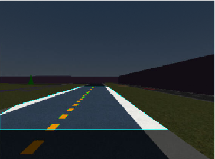
①②③ 결과 오버레이 — 좌우 도로 경계(청록)와 중앙 마킹(파랑), 신뢰 지평선
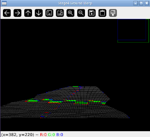
④ Stage4 Ground Warp — 지면 평면으로 워프해 “솟아 있는 물체”를 평면 무늬와 분리한다. 출발 직전 8/25 01:20 캡처
- 로컬 시뮬레이터 부팅 고장 대응: 재부팅 직후 WSL이 Docker보다 늦게 떠서 nginx가 죽는다 → 로그온 45초 후 + 10분마다 도는 부팅 가드 예약작업 추가
대회차량 모사 UGV 완성 — 8/24 00:39 부품, 23:45 조립 완료
8/13에 만든 RPi4 연습 플랫폼과 별개로, 실차와 센서를 맞춘 두 번째 UGV를 만들었다. 8/21~22에 구성한 RPi5 환경이 올라갈 몸체다. 목적은 하나 — 실차 인수 전 마지막 리허설. 대회장에 가기 전에, 로직이 시뮬레이터가 아니라 실제 하드웨어 위에서 도는지 확인하려고 만들었다.
| 1차 연습 플랫폼 (8/13) | 2차 UGV (8/24) | 실차 Physicar | |
|---|---|---|---|
| SBC | RPi 4B | RPi 5 | RPi 5 |
| 라이다 | RPLidar A1 | RPLidar C1 | RPLidar C1 |
| 카메라 | ELP USB (170° 어안) | CSI 카메라 모듈 | CSI OV5647 |
| 섀시 | 1/12 RC (검정) | 4WD 알루미늄 (녹색) | Physicar 전용 |
| 조향 | 애커만 | 애커만 | 애커만 |
| 구동 | Arduino ESC/서보 | Arduino ESC/서보 | 공식 확장보드 |
라이다와 카메라가 실차와 같은 모델이 됐다는 게 핵심이다.
- 조향이 애커만이라
/steering(rad) 계약이 그대로 호환된다. 상위 로직은 어느 플랫폼 위에 있는지 알 필요가 없다 — 8/13에 세운 “이름을 맞춰 두면 로직은 그대로 이관된다”는 원칙이 여기서 값을 했다. - Arduino는 그대로 남겼다. ESC/서보 구동을 담당하고, 1차 플랫폼에서 쓰던
driver_node+ 시리얼 펌웨어를 재사용했다. RPi5로 올라간 건 상위 계층뿐이다. - 1차 플랫폼의 고질병 두 가지가 여기서 다 해소됐다 — ① 카메라가 USB에서 빠지면서 라이다 기동 전류가 다른 장치를 리셋시키던 USB 허브 전력 부족이 사라졌고, ② 카메라 화각이 실차 CSI와 같아졌다.
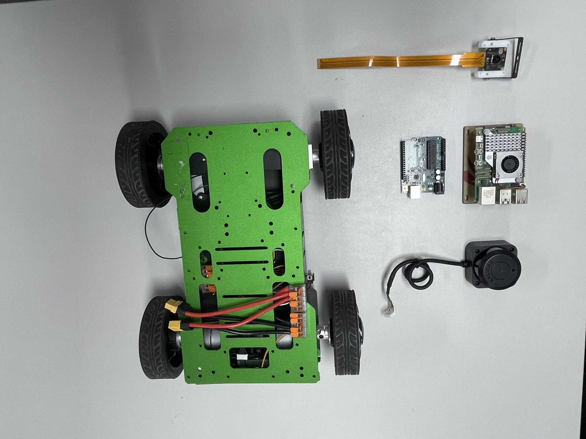
부품 — 4WD 알루미늄 섀시 / RPi 5(액티브 쿨러) / Arduino / CSI 카메라 모듈(FFC 케이블) / RPLidar C1
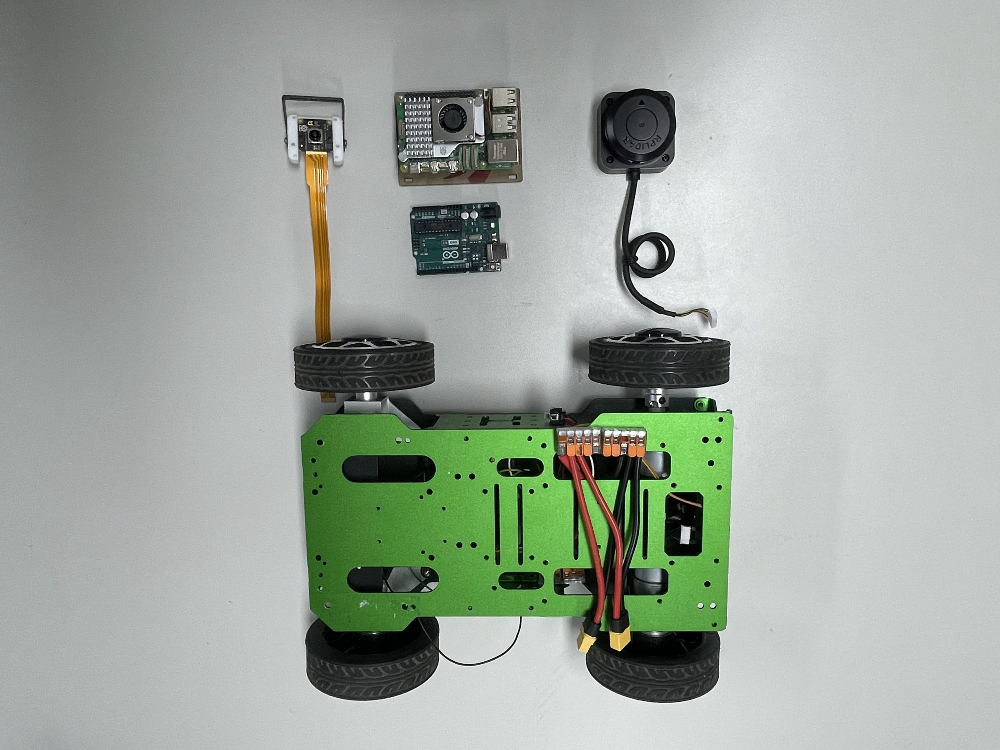
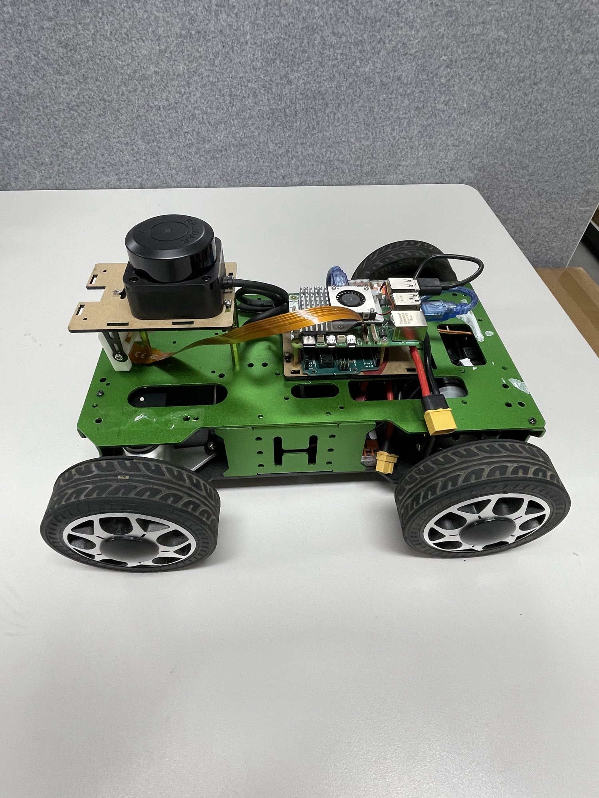
조립 완료 (8/24 23:45) — 라이다는 상단 합판 마운트, RPi 5와 Arduino는 중앙
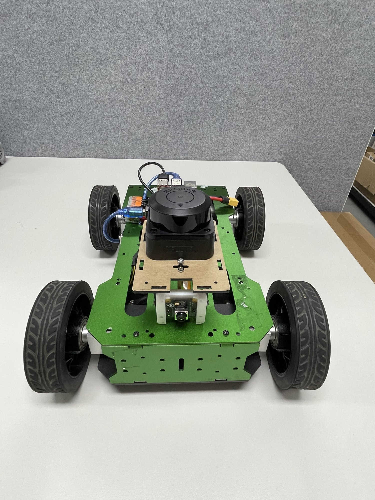
정면 — 카메라는 전방 하단 중앙, 라이다는 그 위. 실차의 센서 배치를 따랐다
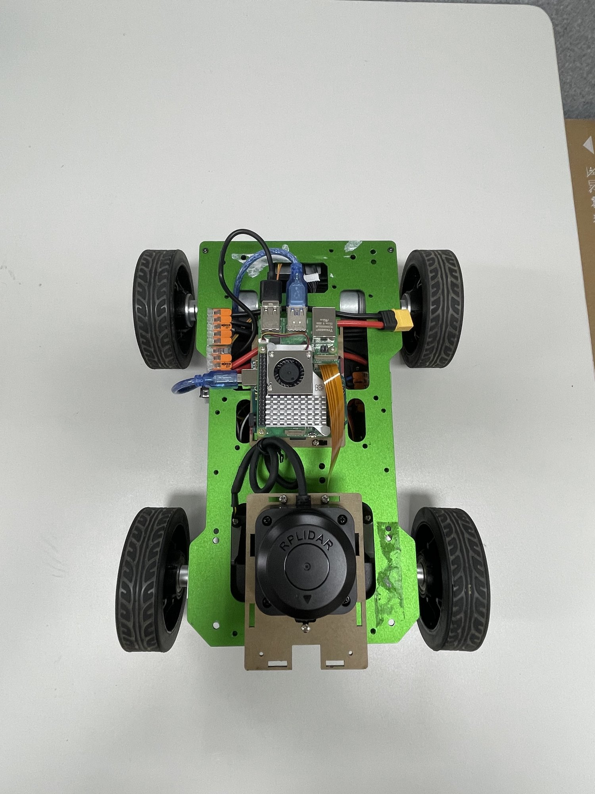
랩실 트랙 주행 — 8/24 03:48 ~ 13:55, 14회
출발 전날 랩실 트랙에서 이 UGV로 주행을 반복했다. 03:48 한 번, 12:0412:30 다섯 번,
13:3013:55 여덟 번.
여기서 돌린 건 corridor planner가 아니다
1차 플랫폼(8/13~15)에서 쓰던 코드를 그대로 재사용했다. 시뮬레이터에서 개발하던
physicar_planner도, GPT와 재설계하던 7단계 파이프라인도 아니다. 하드웨어가 새로 조립된 상태에서 일단 도는 것부터 확인하는 게 목적이었기 때문이다.
결과 — 여러 바퀴를 연속으로 자율주행했다.
- 파라미터는 랩실 트랙 위에서 직접 재측정해서 넣었다 (
YS_calibrate.py가 하려던 바로 그것 — “차가 서 있는 바닥에서 경계값을 뽑는다”) - 실패할 때의 양상은 거의 항상 코너 이탈이었다. 통로를 잃고 서버리는 게 아니라, 코너에서 밖으로 밀려 나갔다 → 조향 여력이 아니라 진입 속도의 문제에 가깝다
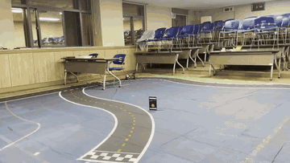
03:48 · 47초 — 이날 가장 긴 주행. 여러 바퀴 연속 · ×6 배속
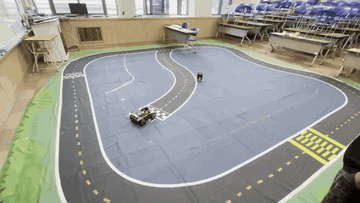
원본 13초 · ×2 배속
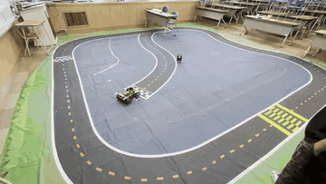
원본 11초 · ×2 배속
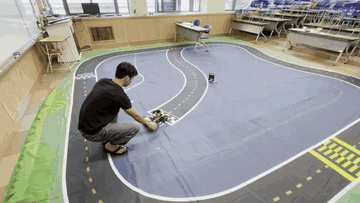
원본 15초 · ×2 배속
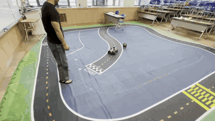
원본 2.0초 · ×2 배속
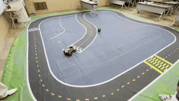
원본 26초 · ×4 배속
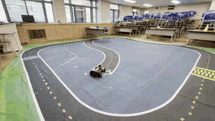
원본 12초 · ×2 배속
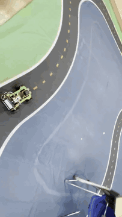
원본 5.6초 · ×2 배속
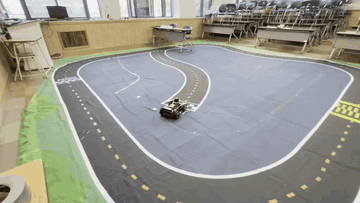
원본 24초 · ×4 배속
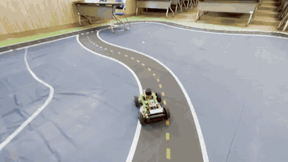
원본 9.7초 · ×2 배속
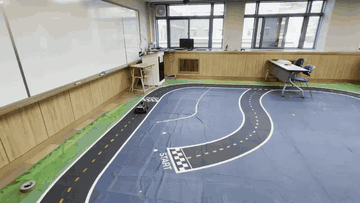
원본 2.5초 · ×2 배속
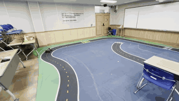
13:53 · 38초 · ×6 배속
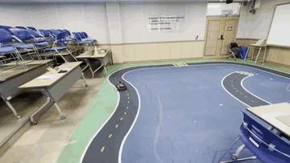
원본 8.3초 · ×2 배속
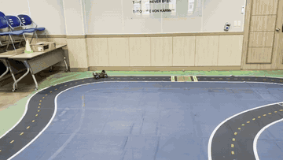
원본 18초 · ×3 배속
8/25 (월) 새벽 — 인수인계하고 출발
- 저장소 private 재전환 (
deploy/에 개인 PC 원격접속 정보가 들어가면서). 규정상으로도 “다른 팀과 코드 공유 시 실격”이 있어 private이 안전한 쪽 deploy/신설 — 노트북 / 시뮬호스트 / RPi5 각각의 환경 구축 스크립트YS_HANDOVER.md작성 — 노트북에서 개발을 이어받아 실차에 올리기까지 한 문서로ANSL_AMET2026.bundle생성 — 인터넷 없이 clone 가능한 오프라인 저장소 사본- 데스크탑을 켜 둔 채 HDMI만 빼고 출발
출발 시점에 알고 있던 취약점
원격 복구가 안 된다. 부팅 가드는
LogonType=Interactive라 로그온 세션이 없으면 아예 돌지 않고, 계정에 암호가 없어(LimitBlankPasswordUse=1) RDP 로그인도 거부된다. → 사고가 나면 랩실 사람에게 클릭을 부탁하는 것이 유일한 복구 경로. 부탁 문구까지 문서에 써 뒀다.
5. 대회 (8/25 ~ 8/27)
가져간 것
| 코드 | GitHub private 저장소 + ANSL_AMET2026.bundle (오프라인 사본) |
| 시뮬레이터 | Docker 이미지 8.4 GB + golden_snapshot (USB, exFAT 필수) |
| 백업 경로 | Tailscale로 집 데스크탑 원격 (https://100.79.41.23:8443/) |
| 실차 배포 | deploy/rpi5/YS_myapp.sh → 실차 웹 UI(:5000) MyApp 패널 업로드 |
대회 출전은 이 코드로 하지 않았다
대회에서는 팀원이 개발한 E2E 로직을 적용해 참가했다. 아래 “준비해 간 절차”와 §2~§3의 통로 기반 스택은 대회 당일 경로에 들어가지 않았다.
대회장 도착 후 실행 순서 (준비해 간 절차 — 실제로는 미실행)
- 트랙이 갱신됐으면 가장 먼저
python3 tools/YS_track_dump.py --save— 본선은 콘 위치만 바뀐다. 좌표를 다시 뽑아둔다 python3 tools/YS_calibrate.py --explain— 차를 트랙 위에 세워두고python3 tools/YS_steer_check.py— 조향 부호와 라이다 장착각 실측aggression을 2.0으로 낮게 시작해서 올린다 (기본 4.0은 시뮬레이터 값)tools/YS_run.sh로 한 바퀴 벤치마크
가장 큰 미지수는 숫자가 아니었다
시뮬레이터에서 맞춘 색상값 중 대회장까지 살아남는 건 거의 없다. 전시장 바닥은 잔디가 아니고, 보라색 경계벽은 존재하지 않고, 조명은 그 홀의 조명이다. 시뮬레이터에서는 색상(H)이 도로와 주변을 갈랐다 — 잔디는 초록이고 도로는 아니니까. 전시장에서 회색 트랙이 회색 바닥 위에 있으면 H로는 아무것도 안 갈린다. 그건 임계값 문제가 아니라 규칙 자체를 바꿔야 하는 문제고,
YS_calibrate.py가 그 경우를 명시적으로 경고하도록 만들어 뒀다. 그때의 유일한 대안이 지우지 않고 남겨둔lane_follow_node.py였다.살아남는 건 규칙의 모양이지 숫자가 아니다.
출발 시점의 미해결 항목
| # | 항목 | 상태 |
|---|---|---|
| 1 | 한 바퀴 완주 | 시뮬레이터에서는 끝내 미달성. 다만 8/24 실차 UGV에서 여러 바퀴 연속 주행으로 해결됐다 (1차 플랫폼 코드 기준) |
| 2 | run.sh 연결 | 시뮬레이터 Evaluation 진입점에서 우리 launch가 아직 안 불림 |
| 3 | 라이다 비상정지 | 미구현. 플래닝 루프 바깥에 둘 것 — 카메라를 믿는 코드와 같은 경로에 있으면 안 된다 |
| 4 | 신호등 화각 | 출발 자세에서 신호등이 이미지 열 410~478(폭 480)에 걸쳐 거의 화면 밖. 카메라 팬(±30°)이 후보인데 미검증 |
| 5 | 인지 ④~⑦ | 7단계 로드맵의 ④부터가 진행 중이었다 |
| 6 | 구동 계층(랩 UGV) | 계약만 확정. 실차에서는 공식 드라이버가 뜨므로 대회 자체에는 영향 없음 |
8/25 (화) — 차량 인수, 실차 데이터 수집, 인지 ④
12:00 실차 배포. 처음 만져 본 실물 Physicar.
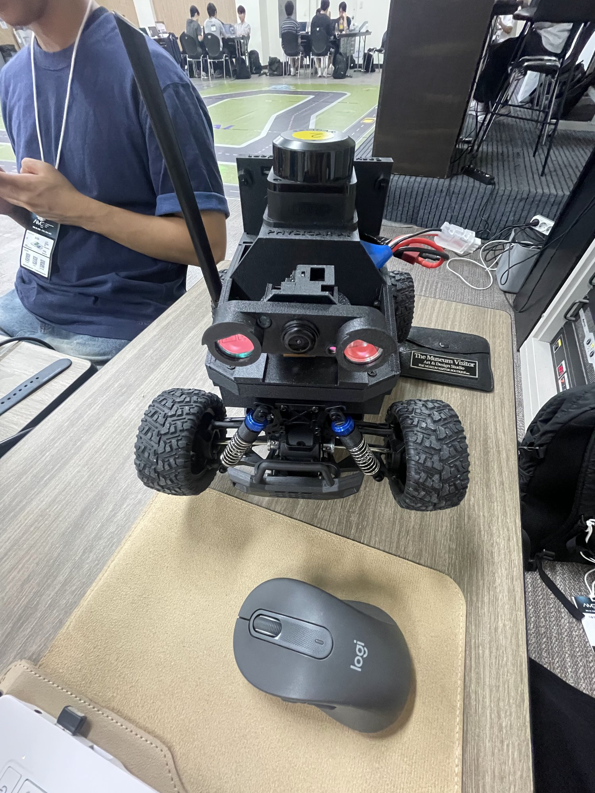
Physicar 실차 — 3D 프린트 바디, 상단 RPLidar C1, 전방 중앙 CSI 카메라와 좌우 적외선 조명 2발. 뒤로 연습 트랙이 보인다
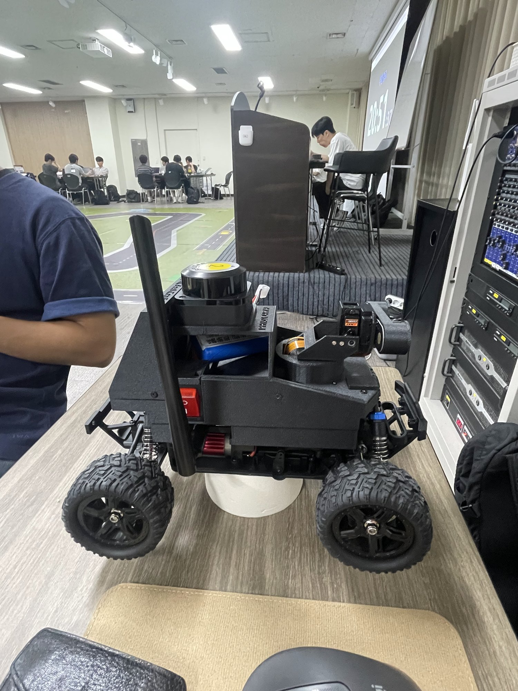
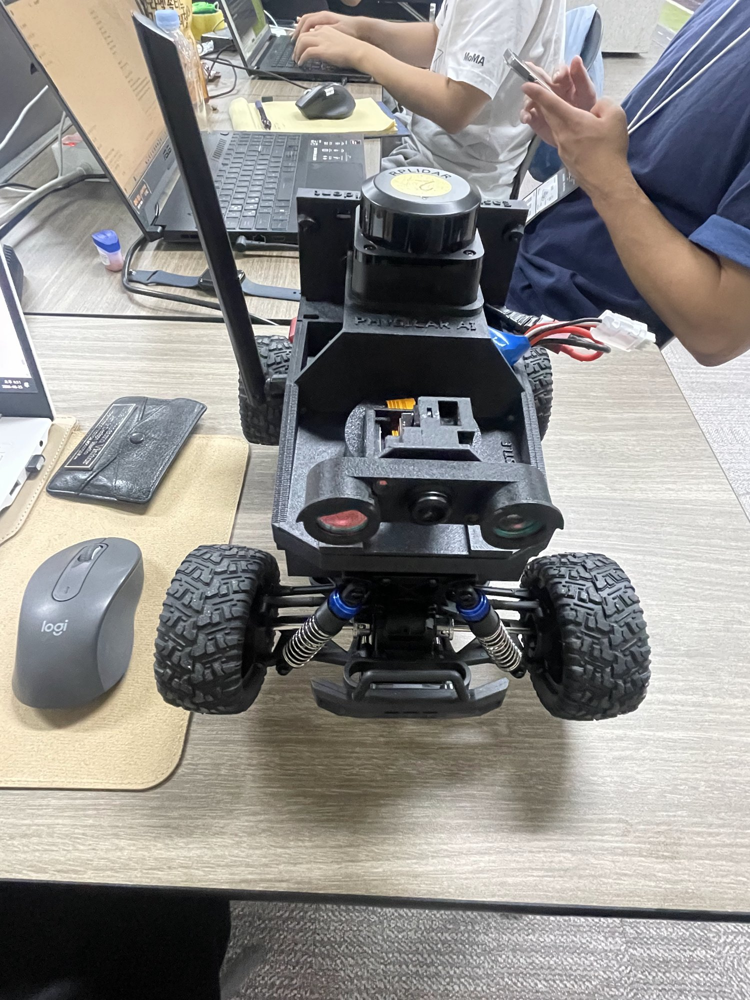
센서 배치를 정면에서 — 우리가 8/24에 만든 UGV가 따라 한 그 배치다
10:46 ~ 11:10 — 차를 받기 전에 만든 건 주행 코드가 아니라 기록 장치였다
| 시각 | 만든 것 | 왜 |
|---|---|---|
| 10:46 | physicar_bringup/launch/camera_tf_launch.py 신설, package.xml에 tf2_ros 추가 | base_footprint → camera_link 고정 TF를 현장 실측값으로 발행. 실차의 카메라·라이다·IMU·드라이버는 이미 시스템 서비스로 떠 있으니 TF 하나만 얹는다 — 주행 launch와 독립이라 같이 띄워도 충돌하지 않는다 |
| 10:55 ~ 11:10 | scripts/topics.env, record_track_bag.sh, run_record.sh | rosbag 수집 진입점. 토픽 목록은 topics.env 한 곳에만 두고, 녹화 직전 ros2 topic list로 필수 토픽이 실제로 발행 중인지 사전 점검한 뒤 시작한다 |
run_record.sh는 대회 공식 실행 방식(source run.sh 한 줄로 환경설정부터 주행까지)과
같은 패턴으로 맞췄다 — 차를 모는 사람에게는 명령 한 줄만 알려주면 되게.
./run_record.sh 05_flat_checker_straight 0.105 0.0 0.1645 0.0 0.0 0.0
# 시나리오 이름 cam_x cam_y cam_z r p y (줄자·각도기 실측)녹화가 끝나면 <bag>.txt 메모 템플릿(수동주행 / 대략적인 속도 / 장애물 위치 / 조명 상태 /
특이사항)이 자동 생성된다. 조명이 어땠는지는 bag에 안 들어가니까.
13:39 리허설, 16:20 본 수집 — 실차 7분치
| bag | 길이 | 메시지 | 성격 |
|---|---|---|---|
rosbag2_2026_08_25-13_39_34 | 1.3초 | 469 | 스크립트가 도는지만 본 스모크 테스트 |
rosbag2_2026_08_25-16_20_56 | 422초 (7분 2초) | 152,282 | 16:20:57 ~ 16:27:59 실주행 수집 |
16:20 bag 내역 — 조종기로 몰면서 전 센서를 통째로 받았다.
| 토픽 | 개수 | |
|---|---|---|
/camera/image_raw (+ /compressed) | 6,329 | ≈15 Hz · 7분치 |
/imu · /imu/mag | 21,102 · 21,098 | 50 Hz |
/odom | 12,660 | Stage-4B 2뷰 워프가 쓰는 그 odom |
/scan · /scan_filtered · /odom/laser | 4,220 · 4,219 · 4,220 | 10 Hz |
/speed · /steering | 5,607 · 5,606 | 실제로 나간 명령 |
/teleop/status | 12,659 | 조종기 주행이다 — 자율주행 로그가 아니다 |
/battery_state · /camera/pan · /camera/tilt | 422 · 9 · 9 |
이 bag의 원본이 지금 없다
노트북 작업본에 들어온
.mcap이 0바이트다. 같은 폴더의metadata.yaml은 152,282개 메시지와 422초를 그대로 기록하고 있으니 녹화는 성공했고 옮기는 과정에서 비었다. 실차 7분 전센서 로그는 차를 반납한 이상 다시 못 만드는 자산이라 원본을 찾아와야 한다. (8/31 정리 때 “녹화가 실패한 것으로 보인다”고 적었던 건 틀렸다 — 파일이 아니라 사본이 비어 있었다.)
11:49 ~ 22:27 — 인지 ④ 장애물 구분
planner_node.py 옆에 쌓인 *.before_stageN_* 백업 8/25 하루치만 34개가 그대로 작업 로그다.
편집 직전에 이름을 붙여 백업하는 습관이라 파일명과 mtime만으로 그날의 시간표가 나온다.
11:49 nearest_distance 14:03 residual_map 14:33 roi_clip_diag
15:13 seeded_silhouette 15:20 seed_structure 15:26 seed_gate
15:36 analysis_mask 15:56 height_residual 16:02 height_residual_logging
16:10 band_row 16:54 support 17:03 파라미터화(launch 인자)
17:07 candidate_match 17:09 old_whole_candidate_match 17:17 candidate_history
17:24 candidate_specific_residual
17:30 frame_state 17:35 anchor_correspondence 17:40 anchor_primary
17:44 seed_anchor 17:48 foot_anchor 18:28 packet_union
19:23 temporal_cleanup 19:47 temporal_confirm 19:59 contact_footprint
20:12 reference_normal 20:16 occupancy ──▶ 여기서 ④ 끝, ⑤ 시작
(⑤ 구간은 20:55 forbidden · 21:30 free_corridor · 22:27 planning_footprint으로 이어진다)
출발 시점의 ④는 틀린 방식으로 돌고 있었다.
막힌 픽셀 하나하나에 그 픽셀이 놓인 스캔 행의 지면 거리를 그대로 부여했다. 그러면 서 있는 물체 하나가 도로 위에 길게 누운 가짜 장애물이 된다. 라바콘 한 개가 1 m짜리 벽이 되는 것이다.
고친 방향은 §6①과 같은 계열이다 — 모르는 것에 아직 값을 주지 않는다.
- Stage-4 — 이미지 영역에서 멈춘다. 신뢰된 Track ROI 안에서 “도로로 인식되지 않은”
연결 영역만 찾는다. 여기서는 어떤 미터 값도 만들지 않는다.
코드 주석에 그대로 적어 뒀다:
blocked=True는 “장애물”이 아니라 **“도로로 인식되지 않음”**이며, 별도의 물체·접지 판단 없이 장애물 기하를 붙여선 안 된다. - Stage-4B — 2뷰 지면 잔차(ground residual). odom으로 두 프레임 사이 이동을 알고 있으니 이전 프레임을 평면 지면 가정으로 워프해서 현재와 겹친다. 평면 무늬는 겹치고 솟은 물체는 안 겹친다. 그 어긋난 양이 높이의 증거다. 기준선(baseline)은 0.10 ~ 0.30 m 이동했을 때만 쓴다 — 안 움직였으면 비교할 게 없고 너무 움직이면 겹칠 게 없다.
- Stage-4C — 접지점만 투영한다. 확정된 물체의 각 이미지 열에서 맨 아래 픽셀 하나만 지면에 투영한다. 실루엣 전체는 절대 투영하지 않는다. 새 임계값을 하나도 안 넣고 물체의 하단 윤곽만 얻는 방법이다.
- 그 접지점들을 Reference Path 법선 좌표로 옮긴다 (
n>0왼쪽 /n<0오른쪽). 결과가 점유 구간[occupied_n_min, occupied_n_max]— 차폭도 안전마진도 아직 없는 순수 관측값.
15:50 — Stage4 Ground Residual. 0 px(어두움) = 평면대로 겹침, 50+ px = 안 겹침. 아직 지면 격자만 잡히고 물체가 안 뜬다
17:45 — 같은 화면. 정면 물체가 잔차 덩어리로 통째로 솟았다. 평면 무늬(주변 격자)와 솟은 물체가 같은 척도에서 갈린다
20:55 ~ 8/26 00:19 — 인지 ⑤ 회피
| Stage | 하는 일 | 지킨 원칙 |
|---|---|---|
| 5A 금지구간 | 관측 점유 구간을 차체 폭 절반씩 양쪽으로 부풀려 차량 중심이 들어가면 안 되는 구간을 만든다 | 안전마진은 아직 안 넣는다 — 순수 기하 충돌 구간부터 |
| 5B 자유 통로 | 같은 프레임의 신뢰된 Track 경계를 장애물의 종방향 위치에서 보간해 좌/우 여유폭을 구한다 | 경계 외삽 금지. 같은 프레임에서 실제로 본 것만 |
| 5C 방향 선택 | 라바콘은 좌 또는 우 차로에 놓이지 한가운데 놓이지 않는다 → 반대쪽이 1순위 | 단, 같은 프레임의 자유 통로가 열려 있다고 말할 때만 채택 |
| 5D 목표 + latch | 최소 기하 우회 목표를 잡고 plan latch — 한 번 방향이 정해지면 목표는 금지구간에서 멀어지는 쪽으로만 움직인다 | 프레임이 잠깐 물체를 좁게 봐도 이미 만든 회피량이 줄지 않는다 |
| 5E 여유 예산 | 남은 clearance budget 계산, 계획용 발자국을 콘 물리폭 0.135 m를 최소 바닥값으로 union | Stage-4 원시 관측은 손대지 않는다 — 계획용 값만 따로 |
회피 해제는 인지가 아니라 odom 전진량으로 판정한다
(stage5_release_if_passed_obstacle()). 물체가 물리적으로 뒤로 갔을 때만 RETURN 구간을
만든다. “안 보이니까 지나갔다”고 판단하지 않는다.
22:06 ~ 22:08 — 연습장 3회
공식 연습 트랙(PHYSICAR AI 매트, 초록 바닥 + 보라 도로, 녹색 라바콘)이 세미나실에 깔려 있다. 자율주행이 아니라 조종기로 몬 것 — 인수한 차의 거동과 트랙 감을 보는 단계다. README에 적어둔 대로 연습장에는 펜스가 없다.
원본 12초 · ×2 배속
원본 12초 · ×2 배속
원본 2.8초 · ×2 배속
8/26 (수) — 00:52 배선, 02:08 RPi5 최적화, 대회장 트랙
00:52 — “Stage 6”, 처음으로 계획이 바퀴에 닿았다
여기까지의 Stage 3/4/5는 전부 진단(diagnostic)이었다. Reference Path도 회피 궤적도
계산은 다 됐지만, self.steering / self.target_speed는 여전히 옛 단일 프레임 HSV
통로 스캔에서만 왔다. 아무도 그 값을 읽지 않았다. 00:52에 그걸 연결했다.
매 프레임, 지금 실제로 쓸 수 있는 것 중 제일 위를 고른다
1) 살아 있고 신선한 Stage-5 회피 궤적 → STAGE5_TRAJECTORY
2) Stage-3 Reference Path → REFERENCE_PATH
3) 옛 통로 스캔 → LEGACY_CORRIDOR ← 안전망
궤적이 오래됐으면(0.4초) “없는 것”으로 처리해서 그냥 아래 단으로 떨어진다. 새 코드가 실패해도 8/20에 데모까지 끝낸 옛 경로가 그대로 남는다.
이 배선을 위해 corridor.py에 들어간 것:
| 함수 | 하는 일 |
|---|---|
reference_path_curvature() | 적합된 Reference Path y=f(d)의 곡률 κ = f''/(1+f'²)^{3/2} — 이게 있어야 speed_for()에 곡선 반경을 줄 수 있다. reference_path_lateral()과 같은 외삽 금지 계약 |
vehicle_point_to_odom() / odom_point_to_vehicle() | 회피 궤적은 만들어진 시점의 차량 프레임에 있다. 조향 목표는 지금 프레임에서 골라야 하므로 한 번 더 변환 |
nearest_trajectory_point() | 궤적 점들 중 lookahead 거리에 가장 가까운 점 |
미해결을 미해결이라고 적었다
배선 함수 docstring에 **“AVOID_READY/NOT_READY 깜빡임은 여기서 해결하지 않는다. 오래된 궤적은 그냥 없는 것으로 처리해 아래 단으로 떨어뜨린다”**고 명시했다. 대회 전날 새벽에 “일단 됐다”로 덮지 않은 것.
02:04 ~ 02:08 — RPi5 최적화 파생본 (physicar_planner_rpi5opt)
시뮬레이터와 노트북에서 돌던 걸 RPi5 한 대 위에서 돌려야 한다. 바꾼 건 딱 두 가지다.
process_scale파라미터 — 입력 프레임을 축소한다.1.0이면cv2.resize자체를 건너뛰어 원래 동작과 완전히 동일하고,intrinsics()가 이미 실제 프레임 크기로 스케일되므로 다른 코드는 한 줄도 안 바뀐다.ros2 launch physicar_planner planner_launch.py process_scale:=0.5- 디버그 이미지 발행을 구독자 수로 게이트 —
get_subscription_count() > 0일 때만cv2_to_imgmsg를 부른다. 아무도 rqt로 안 보고 있으면 인코딩 비용 자체가 사라진다. 근거도 주석에 붙였다: 이 발행들은stage5_avoidance_*상태에 전혀 기여하지 않으므로 꺼도 거동이 안 바뀐다.
corridor.py는 한 바이트도 안 바뀌었다. 최적화가 인지 로직을 건드리지 않았다는 뜻이다.
하루에 늘어난 코드
| 출발 직전 (8/25 00:21) | Stage 6 (8/26 00:52) | RPi5 (8/26 02:07) | |
|---|---|---|---|
planner_node.py | 3,862줄 | 10,814줄 | 10,845줄 |
corridor.py | 3,186줄 | 5,118줄 | 5,118줄 |
약 24시간에 7,000줄. 대회 규정이 “무박 2일 자유개발”이라고 부르는 시간이 이것이다.
11:53 ~ 11:54 — 대회장 트랙 주행 6회
코엑스 전시장의 실제 대회 트랙. 모비스·HL클레무브 부스 사이, 관람객이 둘러선 상태. 연습장과 달리 트랙 옆에 20 cm 펜스가 서 있다.
원본 11초 · ×2 배속
원본 12초 · ×2 배속
원본 13초 · ×2 배속
원본 4.3초 · ×2 배속
원본 25초 · ×4 배속
원본 9.1초 · ×2 배속
17:00 차량 반납.
8/27 (목) — 예선 · 본선 · 시상식
1012 예선 / 1315 본선 / 15~ 시상식.
| 결과 | |
|---|---|
| 예선 | 통과 → 본선 진출 |
| 본선 | 완주. 다만 패널티가 붙었다 |
| 시상 | 수상하지 못함 |
우리 팀 주행 영상. 관중석과 펜스가 둘러싼 본무대 트랙이다.
42초 · ×6 배속
55초 · ×8 배속
84초 · ×12 배속
8/27 15:01, 시상식 직후. 뒤가 대회 트랙
대회 당일 작업 기록 — 2026-09-01 보강
8/31 정리 시점에는 8/25~28 세션 기록이 이 PC에 전혀 없었다. 그 자리를 비워 두고 “노트북에서 가져오기로 했다”고만 적어 뒀는데, 노트북 작업본이 도착해서 코드·rosbag· 스크린샷의 타임스탬프로 채웠다 (§5의 8/25 · 8/26 절). 세션 대화 로그는 여전히 없고, 아래는 산출물의 시각과 내용에서 재구성한 기록이다.
채워진 것:
| 8/31에 비어 있던 질문 | 답 |
|---|---|
| 7단계 로드맵을 어디까지 올렸는가 | ④ 장애물 구분 완료 · ⑤ 회피 완료 · ⑦ Tracking Controller 1차 배선까지. 8/26 00:52 “Stage 6”에서 처음으로 계획이 조향·속도에 연결됐다 |
| 대회장에서 뭘 했는가 | 오전에 rosbag 수집 파이프라인 → 16:20 실차 7분 전센서 수집 → 인지 ④ → ⑤ → 배선 → RPi5 최적화 |
| 코드 규모 | 하루에 planner_node.py 3,862 → 10,814줄 |
| 실차 데이터가 남았는가 | 남았다. 다만 사본이 0바이트 (아래) |
아직 못 채운 것:
- 본선 랩타임과 패널티 내역 — 충돌 5초 / 이탈 5초 / 적색출발 10초 중 무엇이었는가
- 대회에 쓴 E2E 로직의 구조 —
README_접속.md가 보드의~/physicar_ws/준형/README_E2E.md를 “주행 관련은 전부 여기 있다”고 가리키는데 그 파일이 작업본에 없다. 보드에서 받아와야 한다 - 통로 스택이 대회 주행 경로에 안 들어간 경위 — 8/25~26에 한 것은 실차 데이터 수집과 인지 ④⑤ 완성이었고, 그 결과가 예선/본선 주행에 연결됐는지는 별도 확인이 필요하다
- 16:20 bag 원본 복구 —
.mcap0바이트. 실차 반납 후에는 재현 불가 -
2026AMET/cd homephysicarphysicar_ws.txt(8/25 21:49) —/home/physicar/physicar_ws에서planner_node.py245~290행을 열어 본 흔적이 남아 있다. 다만 랩실 RPi5 보드도 계정명이physicar라, 이 한 줄만으로는 실차인지 랩 보드인지 갈리지 않는다 - 노트북의
~/.claude/projects/아래 8/25~27자 세션 로그 (작업본에 들어온session/은 8/18까지의 툴링 설정 기록이라 대회 당일과 무관하다)
6. 회고 재료
면접에서 물어볼 만한 것들만 추렸다.
① 규칙의 방향을 뒤집은 것 — “초록을 막는다” → “도로를 명명한다”. 모르는 표면을 장애물로 두는 쪽이 틀릴 때 안전한 방향이다. 벽을 트랙으로 알고 3 m/s로 들이받고 나서 배웠다.
② 인계 지점을 없앤 것 — 차선추종/회피 분리 구조를 통로 하나로 합쳤다. “제어권이 코너 한복판에서 넘어간다”는 문제를 모듈을 잘 만들어 푸는 대신 모듈 경계를 없애서 풀었다.
③ 못 쓴다는 걸 증명하고 접은 것 — 전역 레이싱라인. 펜스 20 cm vs 라이다 평면 17 cm, 연습장엔 펜스 없음. 하고 싶은 것과 할 수 있는 것을 숫자로 갈랐다.
④ 발진 버그 — 인지가 아니라 명령의 물리적 실현 가능성을 안 본 버그. “통로를 정확히 읽고, 어떤 차도 낼 수 없는 양을 요구했다”는 문장이 이 프로젝트에서 제일 값진 한 줄.
⑤ 하드웨어에 이틀을 썼다 — A3 사망, 보조배터리 전력 부족, 라이다 역방향 장착, GX12-2 커넥터 부재. 개발 일정의 절반이 여기 갔다. 다음엔 부품 검증을 먼저 한다.
⑥ 마감 앞에서 되돌릴 자리를 남긴 것 — 대회장 무박 2일에 planner_node.py를
3,862줄에서 10,814줄로 불렸다. 그런데 그 코드는 — ① 새 경로가 실패하면 8/20에 데모까지
끝낸 옇 경로로 자동으로 떨어지고(3단 우선순위), ② 미해결(AVOID_READY 깜빡임)을 미해결이라고
주석에 적어 두고, ③ 새벽 2시 성능 최적화에는 “거동이 안 바뀌는 이유”를 붙였다.
급할수록 되돌릴 자리를 남긴다.
참고
- Corridor Planner (physicar_planner) —
corridor.py/planner_node.py상세 설계 - DSC Autonomous Driving — 같은 여름의 강화학습 기반 자율주행 프로젝트
- 코드:
C:\2026AMET자율운행자동차대회\physicar_ws\src\—physicar_planner,physicar_judgment,physicar_vision,physicar_nav,physicar_driver,physicar_bringup - 문서:
physicar_ws/README.md,physicar_ws/YS_HANDOVER.md,deploy/README.md - 대회장 작업본:
C:\2026AMET자율운행자동차대회\노트북 작업본\—physicar_planner_stage5_final_20260826/(00:19 stage5),..._integrated/(00:52 Stage 6),physicar_planner_rpi5opt/(02:07 RPi5),rosbag.zip,rosbag2_2026_08_25-16_20_56/,PORTFOLIO_HANDOVER.md,README_접속.md - GitHub:
github.com/yusik36/ANSL_AMET2026(private, 2026-08-25 전환)